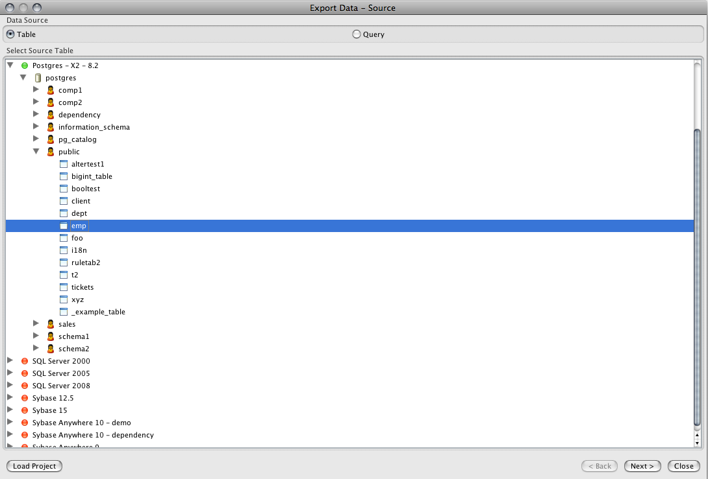
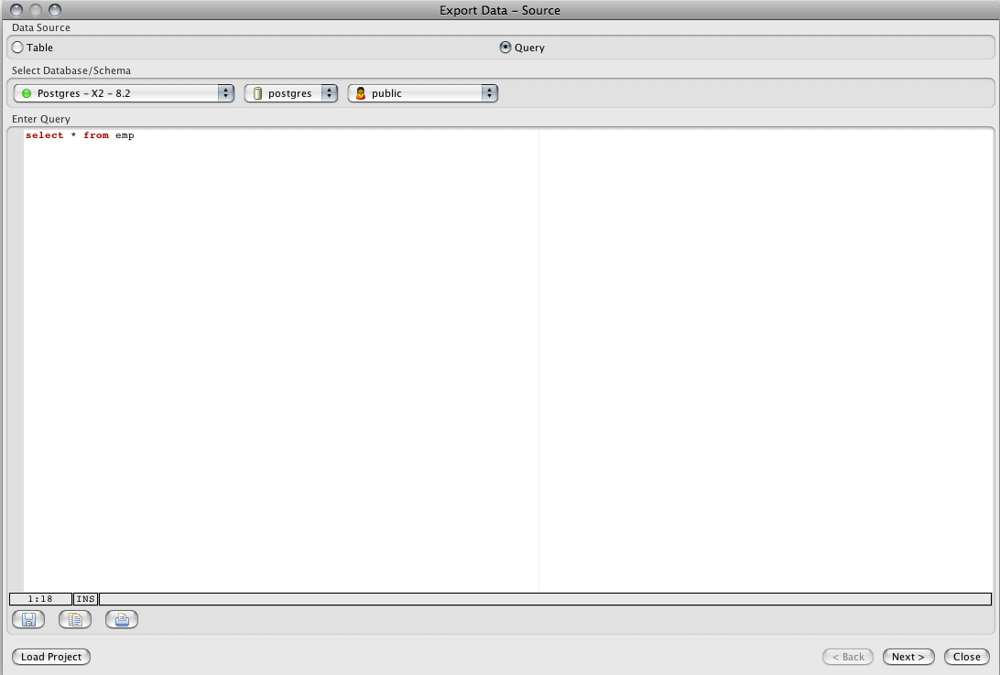
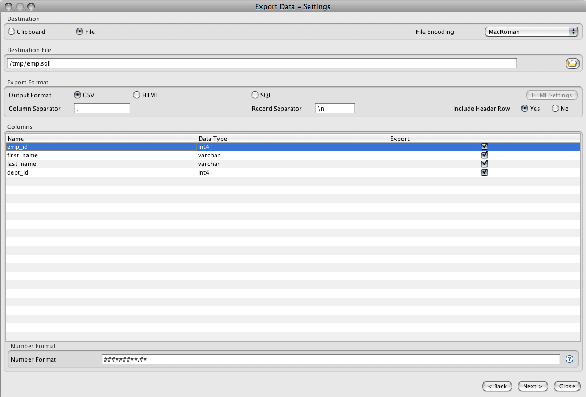
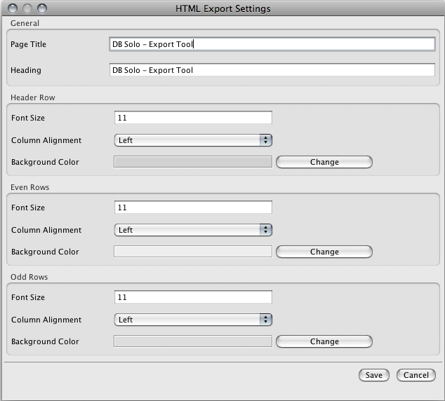
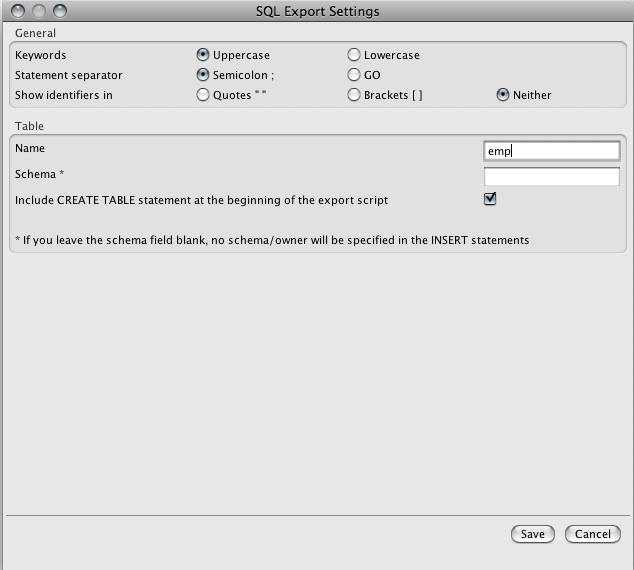
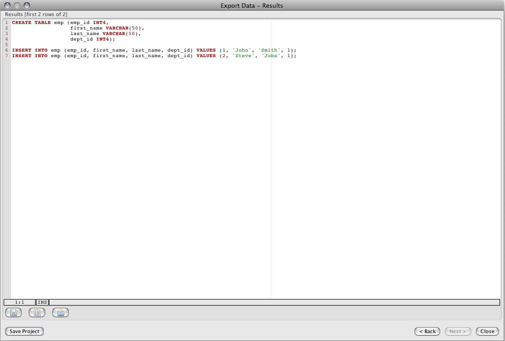

The Export Tool allows you to export data from a table or query to a CSV, HTML or SQL file. The rows are exported as they are retrieved from the database, this allows one to export millions of rows without running out of memory.
The export tool supports all supported DBMS products including Oracle, Cassandra, Vertica, SQL Server, Sybase ASA/ASE, MySQL and PostgreSQL. Similarly, it supports all OS platforms; Linux, Windows and MacOS.
You can invoke the Export Tool from the 'Tools' menu in the main toolbar of DB Solo.
The first page of the export wizard allows you to choose where the exported data is selected from, a table or a query. When the 'Table' option is selected, you must pick the source table from the tree control on the first page. Only one table can be selected at a time.

When the 'Query' option is selected, you need to enter the select statement and pick the database/schema that will be used when executing the query. Any SELECT statement supported by the underlying database engine can be entered, including views, joins, where statements and order by statements.

The second page of the export tool lets you configure various output options, including which columns will be exported. The first section allows you to select the output destination, either the system clipboard or a file. When the file-option is selected, you can choose the file encoding that will be used when text is written to the file.
You must enter the name and path of the destination file in the The 'Destination File' section. You can also use the folder-button to bring up a file chooser that lets you navigate to the folder/file you wish to use.
The 'Export Format' section lets you pick the export format; CSV, HTML or SQL. When the CSV-option is selected, you must enter both column and row separator character(s). By default, comma is used as the column separator and a newline is used as the record separator. When CSV or HTML-option is selected, you can also indicate if you want column headers (column names) to appear on the first row.
The 'Columns' section allows you to pick columns that will be part of the export. When the CSV or HTML-option is checked, you can also set the output format for each column. You must go thru all the columns that you wish to export and set the format for them individually. The syntax of the format depends on the column type in question, when you select a column type that requires a special format there is a quickhelp button available that explains the syntax in more detail. You can also change the default format by going to Tools/Settings/Export Tool. This way you don't need to change the format for each column individually, assuming you wish to use the same format for each column of the same type (e.g. numeric, date, etc).

When the output format is set to 'HTML', you can click on the 'HTML Settings' button to change the format of the HTML document that will be generated. The following HTML options can be configured.

When the output format is set to 'SQL', you can click on the 'SQL Settings' button to change the format of the generated SQL statements. The following options can be configured.

After setting the format options to desired values, click 'Next' to start the export process. Depending on the number of rows that will be exported, this can take several minutes or even longer. Once the data export is completed, the export wizard will show the results screen. The results page will only the first 20 rows that were exported.

On the last page of the export wizard you can click on the 'Save Project' button to save the selected export settings to a project file. These saved project files can then be used on the first page using the 'Load Project' button. The project file contains all selected options including the data source, column formats and the CSV/SQL/HTML settings.
Exports can be run from a command shell using settings from a saved project file. This allows you to run exports regularly using cron or a similar mechanism. The following shell command will run an export from settings in 'myproject.xml':
commandLine -export myproject.xml
where 'myproject.xml' is a project file. You can use project files on different machines as long as the configured server connection names match. The project files are standard xml text files that can be edited manually outside DB Solo.
The command line tool will output errors and other messages in export.log file.
| Back to Index |
DB Solo www.dbsolo.com support@dbsolo.com |